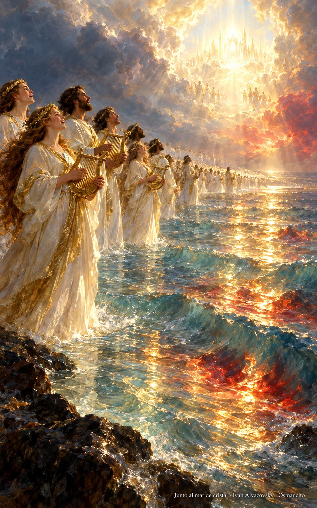
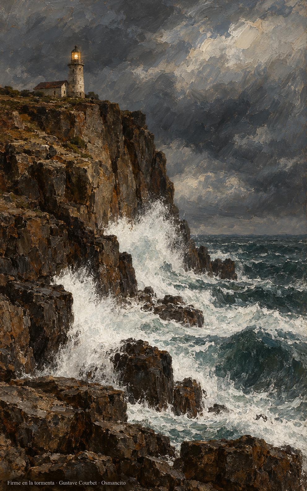
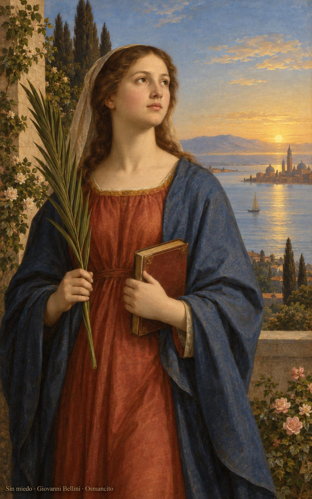

25 de noviembre de 2026
¡Buenos días!
Ni un cabello
46
Si se mantienen firmes, conseguirán la vida.
Lucas 21,19. Fuente
Que cantemos junto al mar de cristal el cántico de los vencedores, con las cítaras que tú nos das, porque grandes y maravillosas son tus obras. Que los ríos aplaudan de gozo. Que no preparemos defensa cuando nos lleven ante reyes y gobernantes: tú pondrás en nuestra boca palabras sabias que ningún adversario resista. Que nos mantengamos firmes, sin miedo, porque ni un cabello de nuestra cabeza perecerá, y que firmes consigamos la vida prometida.

- Los vencedores, de pie junto al mar de cristal mezclado con fuego, cantan con las cítaras que Dios les dio: Apocalipsis 15, grandes y maravillosas son tus obras.

- Una pequeña luz brilla firme en lo alto del peñasco mientras las olas rompen abajo: Lucas 21, ni un cabello perecerá; el que se mantiene firme conseguirá la vida.
¡Feliz miércoles 25 de noviembre!
😊🙋♂
Santa Catalina de Alejandría, virgen y mártir
Que no temamos a los que matan el cuerpo y no pueden matar el alma: hasta los cabellos de nuestra cabeza están contados y valemos más que los pájaros. Que te reconozcamos delante de los hombres, como Catalina, virgen y mártir, y que tú nos reconozcas ante el Padre. Que bebamos gratis del manantial del agua de la vida, salvados como un ave de la trampa del cazador, y que el vencedor reciba su herencia.

- La joven sostiene la palma y el libro en el jardín al amanecer, sin miedo: Mateo 10, valen ustedes mucho más que todos los pájaros.
¡Feliz memoria de santa Catalina de Alejandría!
© 2026 Osmancito